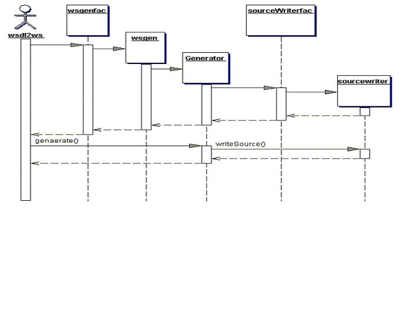

|
|

|
|
|
|
| Apache | WS |
WSDL2Ws ToolAxis C++ WSDL2Ws ToolContents 1 IntroductionThe WSDL2Ws tool that comes with Axis C++ can be used to generate different types of wrapper classes / skeletons for the server side and wrapper classes / stubs for the client side for a given WSDL file. WSDL2Ws tool is written in Java and is based on the WSDL tools by Axis Java project. 1.1 Source Code GenerationWSDL2WS tool can be used for generating the following C/C++ source files for a given WSDL file :
The generated Wrappers support the following functions :
1.2 Programming LanguagesThe tool is capable of generating source code for both C++ and C 1.3 Encoding StylesThe tool should be able to support SOAP 1.2 encoding style and extensible to support other encoding styles as well. However verifying the compliance with SOAP 1.1 / SOAP 1.2 and WS-I Basic Profile remains a TODO. 1.4 Styles of ServicesThe tool is able to generate code for RPC (encoded) and Document Literal style WSDLs 1.5 Support for Complex TypesThe tool generates wrapper classes / structs / functions for complex types. The generated source include:
2 Using the Tool2.1 Dependencies on Axis Java toolApache Axis C++ uses WSDL processing tools from Axis Java project and extends those for C/C++ code generation. The following jar files that come with (or used by) Axis Java are required to run Axis C++ WSDL2Ws tool:
"SchemaUtils" and "ElementDecl" classes of Axis Java tools have been extended by Axis C++ WSDL2Ws implementation. Other than the two classes mentioned above, no other class from Axis Java WSDL tool implementation has been overridden or extended at present by Axis C++ WSDL2Ws tool; hence all other classes in Axis Java tool are used as they are. 2.2 Building the ToolIf you want to build the WSDL2Ws tool from source, there is an Apache Ant build script to help you. Assuming that you have installed Ant properly, what you have to do is to set the CLASSPATH to include Axis Java jar files mentioned in the previous section and run ant command in $AXISCPP_HOME/src/wsdl folder. Once you build the tool the generated wsdl2ws.jar file would be placed in $AXISCPP_HOME/lib/axis/ folder. 2.3 Synopsisjava WSDL2Ws [options] wsdl-file Options -help, -h print a short help message 2.4 Setting up CLASSPATHMake sure that your CLASSPATH environment variable has all the jar files mentioned in section 2.1 above. Then modify your CLASSPATH to include the wsdl2ws.jar file from Axis C++: On Linux: CLASSPATH=$AXISCPP_HOME/lib/axis/wsdl2ws.jar:$CLASSPATH export CLASSPATH On Windows: set CLASSPATH=%AXISCPP_HOME%\lib\axis\wsdl2ws.jar;%CLASSPATH% Alternatively, you can use the -classpath option of java command to specify the CLASSPATH. 2.5 Running the ToolYou could run the tool as shown in the following example. Assuming you have not included wsdl2ws.jar in your class path: java -classpath $AXISCPP_HOME/lib/axis/wsdl2ws.jar:$CLASSPATH org.apache.axis.wsdl.wsdl2ws.WSDL2Ws \
-obaseServerOut $AXISCPP_DEPLOY/wsdls/base.wsdl
The above command will generate C++ server side skeleton and wrapper classes and place the generated source files in a folder named baseServerOut. You could have also used -sserver and -lc++ options to generate the same. To generate client side C++ code for the same WSDL file and place the generated code in baseClientOut folder, you could run: java -classpath $AXISCPP_HOME/lib/axis/wsdl2ws.jar:$CLASSPATH org.apache.axis.wsdl.wsdl2ws.WSDL2Ws \
-obaseClientOut -sclient -lc++ $AXISCPP_DEPLOY/wsdls/base.wsdl
3 Architecture3.1 OutlineThe tool takes a top down approach. It starts with a WSDL document and generates all the classes (skeletons, wrapper classes for complex types and stubs) necessary to deploy (server side) and consume (client side) the web service. For more information about the generated classes please refer to the architecture documentation. The following figure shows the high level architecture of the WSDL2Ws tool  3.2 Mediator WebServiceContextThe WSDL file and the user options are processed by the WSDL2Ws class. Then WSDL2Ws creates an instance of WebServiceContext class (wscontext), which is the runtime representation of the processed data. This WebServiceContext instance selects the Generator to be used. The Generators extract the information from the WebServiceContext instance and creates the files. The WebServiceContext instance acts as a mediator and creates a loosely coupled system. WebServiceContext has the following components
3.2 GeneratorGenerator generates a class based on the options passed by user. It contains a class called SourceWriter and the concrete implementation of the SourceWriter decides what the Generator generates. 3.4 flow of Execution
3.5 Sequence Diagram |